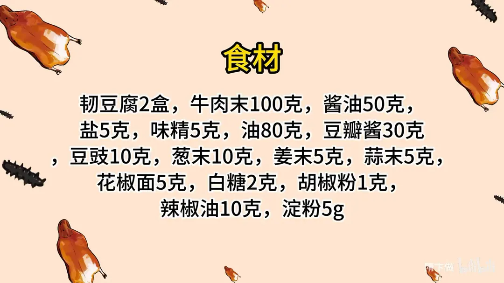
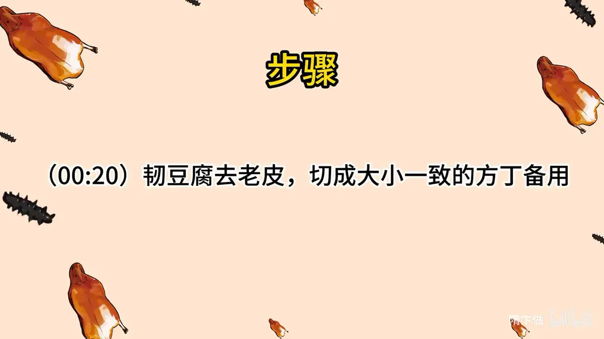
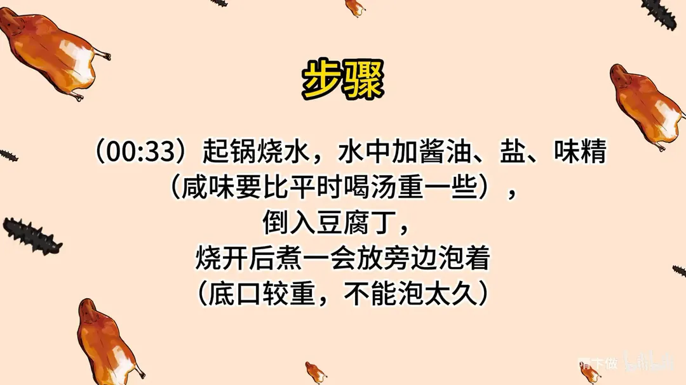
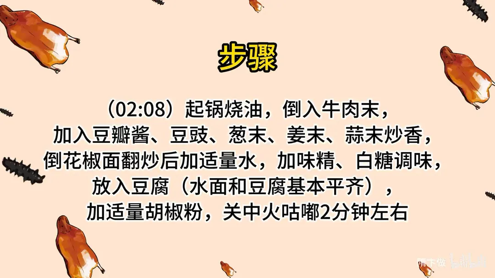
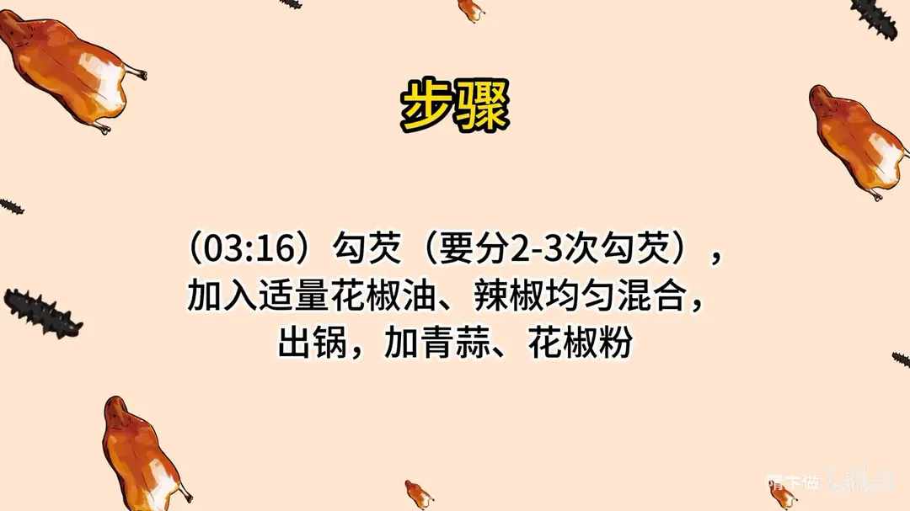

麻婆豆腐
隋卞一做。豆腐先盐水浸泡去豆腥定底味，勾芡分 2–3 次。
原视频：https://www.bilibili.com/video/BV1zu4y1A7n1
食材
韧豆腐、牛肉末、酱油 等 16 样
| 类别 | 用料 | 用量 |
|---|---|---|
| 主料 | 韧豆腐 | 2 盒 |
| 主料 | 牛肉末 | 100g |
| 调味 | 酱油 | 50g |
| 调味 | 盐 | 5g |
| 调味 | 味精 | 5g |
| 调味 | 油 | 80g |
| 调味 | 豆瓣酱 | 30g |
| 调味 | 豆豉 | 10g |
| 调味 | 葱末 | 10g |
| 调味 | 姜末 | 5g |
| 调味 | 蒜末 | 5g |
| 调味 | 花椒面 | 5g |
| 调味 | 白糖 | 2g |
| 调味 | 胡椒粉 | 1g |
| 调味 | 辣椒油 | 10g |
| 调味 | 淀粉 | 5g |
步骤
- 切豆腐：韧豆腐去老皮，切成大小一致的方丁备用。
- 盐水浸泡：起锅烧水，水中加酱油、盐、味精（咸味要比平时喝汤重一些），倒入豆腐丁，烧开后煮一会放旁边泡着（底口较重，不能泡太久）。
- 炒肉臊：起锅烧油，倒入牛肉末，加入豆瓣酱、豆豉、葱末、姜末、蒜末炒香；倒花椒面翻炒后加适量水，加味精、白糖调味。
- 下豆腐：放入豆腐（水面和豆腐基本平齐），加适量胡椒粉，关中小火咕嘟 2 分钟左右。
- 勾芡：勾芡要分 2–3 次，加入适量花椒油、辣椒均匀混合，出锅，加青蒜、花椒粉。
小贴士
- 勾芡分次进行，芡汁才能挂住豆腐且不糊。
- 豆腐下水后不要频繁翻动，晃锅代替铲子。
讲解要点
难度：★★★☆☆（不难在步骤，难在豆腐不碎和分次勾芡）
为什么这么做
- 去老皮、切大小一致的丁：豆腐表面那层老皮口感粗、也挂不住味；丁大小一致，受热和入味才同步。
- 先盐水煮、再泡着：调味水比平时喝的汤咸一点，给豆腐打底味；盐让豆腐里的蛋白收紧，烧的时候不易碎；泡着不捞出来，一是防止豆腐粘在一起，二是让颜色和味道慢慢进去。底口重，不能泡太久。
- 牛肉末不急着扒拉：等贴着锅底那面煸定型再翻，肉末才是一粒一粒的，不是一堆肉泥。
- 豆瓣酱、豆豉再加上葱姜蒜一起炒香：这四样是麻婆豆腐的香味底子，油里炒透了，后面加水才有味。
- 水与豆腐基本平齐、中火咕嘟 2 分钟：汤多了味淡、豆腐飘着不入味；咕嘟让味往里走，也让豆腐定型。
- 分 2–3 次勾芡：一次勾，淀粉糊化不均匀、容易结坨；分次勾，每层芡都挂住了，最后汤汁才紧紧裹在豆腐上、不往下淌。
- 出锅前花椒油、辣椒油，出锅后再撒青蒜和花椒粉：麻辣的香气都是挥发性的，关火前后放才留得住。
容易翻车
- 豆腐泡太久，咸得发死。
- 肉末下锅就猛扒拉，炒成黏糊一团。
- 一次勾足芡，锅里结疙瘩、芡糊一片。
- 烧的时候用铲子横铲，豆腐全碎。
- 花椒粉提前下锅，麻味炒没了。
热评补充
- 不嫌麻烦可以先单独把牛肉末煵酥，烧的时候下一半、勾芡前再下另一半，肉香和口感层次更足。
- 花椒面最好现焙现磨，香气比买现成的花椒粉强很多。
原片尾卡





原片文案
AI 字幕校准稿
中国菜那么多，凭什么它是国民下饭菜？麻婆豆腐，小隋版本。正宗的麻婆豆腐可能挺麻烦的，太普通的又不太好吃，我的版本是把这两个给它结合了，但是味道绝对能秒杀外边的馆子，你就回家做。
我们选用的是嫩豆腐，把老皮给它去一下，去完之后给它切成大小一致的方丁，齐活，前面活没有了。锅里面烧上干净水，倒上点酱油，加点盐、味精。它这个咸度怎么掌握呢？就比平时喝那汤稍微咸点就行了。这个烹调前调味，是给豆腐上底味，越吃越有回味。然后把豆腐倒进去，豆腐在盐的作用下也会变得稍微更紧实一点。把它烧开煮一会儿，在水烧开的同时，这个酱油也会附着到豆腐上面，变成一个浅浅的酱油色。然后呢就给它放旁边泡着就行了。千万不能捞出来，捞出来这豆腐就有可能粘一块了。
这个锅开始炒小料了，加点油，什么菜籽油、花生油、色拉油都可以。把肉末倒进去，今天我选用的是牛肉末，不用着急扒拉它。加豆瓣酱、豆豉、蒜末、姜末、葱末，炒出香味。放花椒面，加入水，调味加点味精、白糖。
然后把焯过水的豆腐放进去，加点胡椒粉，关中火稍微咕嘟一下，水的面跟豆腐的面基本平就行。不着急吃，让它咕嘟两分钟，让所有的味道全都浸到豆腐里面去，定一下味。
一勺水，勾芡。这个不能一次勾成，一次勾芡肯定一大疙瘩一大疙瘩的。出锅前再来点花椒油，来点辣椒，出锅撒青蒜，放点花椒面。
嫩豆腐比老豆腐更加的滑嫩，而且豆腐里面不好的那种味道，嫩豆腐完全没有，是很小很小的豆香味，还是有一点的。麻辣鲜香烫嫩酥，七八个字，差不多吧，拌米饭绝配。而且我们这下料也狠，牛肉末可以多下点，停不下来了。这个版本是简化了很多很多的步骤，自己在家先做吧。